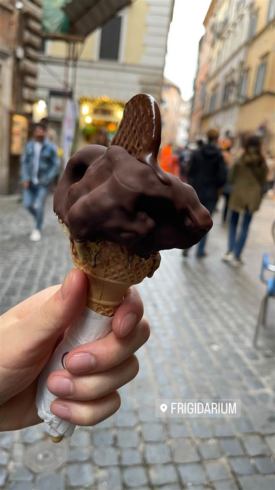

スイーツ · アイス・ジェラート · ナヴォーナ広場
Frigidarium
着色料を使わず作りたてを提供する自家製ジェラート
FRIGIDARIUM
ナヴォーナ広場近くの路地にある2006年創業の家族経営ジェラテリア。店名は古代ローマ浴場の冷水浴室『フリジダリウム』にちなみ、着色料や水素添加油脂を使わない自家製ジェラート・シャーベットを1日に何度も作りたてで提供している。
TRIVIA
豆知識
- 店名「Frigidarium（フリジダリウム）」は古代ローマ浴場の『冷水の間』に由来する
- 定番以外にストラッチャテッラやスパニョーラなど珍しいフレーバーも扱う
REVIEWS
世間の評判
チョコがけの本格ジェラート
- ここのジェラートをローマ一美味しいと評価する声が多い
- チョコレートがけのユニークな提供方法を評価する声がある
- 人気のため行列ができ待ち時間が長いという声が多い
- 席がなく持ち帰りが基本だという指摘もある
Yelp
| 創業 | 2006年創業 |
|---|---|
| 看板 | 自家製ジェラート・シャーベット、温かい溶かしチョコをコーティングするタイプのアイス |
| こだわり | 水素添加油脂・着色料を使わず、1日に何度も作りたてを提供 |
| どこから | 海外 |
| 行くなら | 行列 |
| 場所 | ナヴォーナ広場周辺（バス Chiesa Nuova） Via del Governo Vecchio 112, 00186 Roma, Italia |
| メモ | ナヴォーナ広場とカンポ・デ・フィオーリの間の路地にあり、行列ができる人気店 |
食べたもの：チョココーティングジェラート
NEARBY
近い店・同じ系統の店
-
 アイス・ジェラート 中目黒駅
Premarché Gelateria Tokyo 中目黒駅前店
常時30〜40種、半数近くがヴィーガンの国際受賞ジェラート
昼 ～¥999 夜 ～¥999
アイス・ジェラート 中目黒駅
Premarché Gelateria Tokyo 中目黒駅前店
常時30〜40種、半数近くがヴィーガンの国際受賞ジェラート
昼 ～¥999 夜 ～¥999
-
 アイス・ジェラート 恵比寿
JAPANESE ICE OUCA（ジャパニーズアイス櫻花）恵比寿本店
宇治田原産の最高級抹茶を使う和素材のアイスクリーム
昼 ～¥999 夜 ～¥999
アイス・ジェラート 恵比寿
JAPANESE ICE OUCA（ジャパニーズアイス櫻花）恵比寿本店
宇治田原産の最高級抹茶を使う和素材のアイスクリーム
昼 ～¥999 夜 ～¥999
-
 アイス・ジェラート JR小樽駅
山中牧場 小樽店
100％乳製品を3日熟成させた牛乳ソフトクリーム
昼 ～¥999 夜 ～¥999
アイス・ジェラート JR小樽駅
山中牧場 小樽店
100％乳製品を3日熟成させた牛乳ソフトクリーム
昼 ～¥999 夜 ～¥999
-
 アイス・ジェラート 熱海駅
熱海プリン（本店）
熱海温泉の源泉水を使いじっくり蒸し上げる土地由来のプリン
昼 ～¥999 夜 ～¥999
アイス・ジェラート 熱海駅
熱海プリン（本店）
熱海温泉の源泉水を使いじっくり蒸し上げる土地由来のプリン
昼 ～¥999 夜 ～¥999
-
 アイス・ジェラート
DOLCE STELLA
アイス・ジェラート
DOLCE STELLA
-
 アイス・ジェラート 表参道駅
ERIC ROSE
ハワイの人気カフェが開いた日本1号店のパンケーキ
昼 ¥2,000～¥2,999 夜 ¥2,000～¥2,999
アイス・ジェラート 表参道駅
ERIC ROSE
ハワイの人気カフェが開いた日本1号店のパンケーキ
昼 ¥2,000～¥2,999 夜 ¥2,000～¥2,999